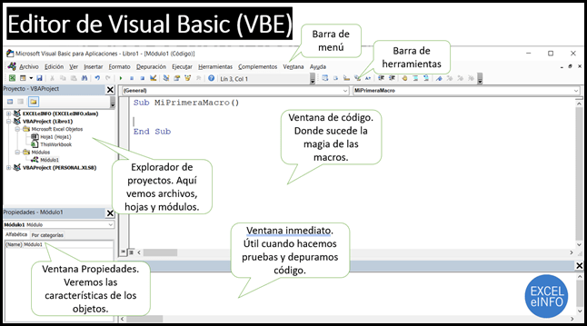

El desarrollo en VBA se realiza a través del Editor de Visual Basic (VBE), un entorno integrado en las aplicaciones de Office. Para acceder al VBE, es necesario habilitar la pestaña "Desarrollador" en la cinta de opciones de la aplicación correspondiente. Una vez habilitada, se puede abrir el editor seleccionando "Visual Basic" en dicha pestaña. El VBE proporciona herramientas para escribir, editar y depurar código VBA, así como para gestionar módulos, formularios y controles. Además, permite acceder a la ventana de inmediato para ejecutar líneas de código individuales y a la ventana de exploración de proyectos para navegar por los diferentes componentes del proyecto. Familiarizarse con el entorno de desarrollo es fundamental para aprovechar al máximo las capacidades de VBA y desarrollar soluciones eficientes y organizadas.
Microsoft VBA
Entorno de desarrollo

Obra publicada con Licencia Creative Commons Reconocimiento Compartir igual 4.0